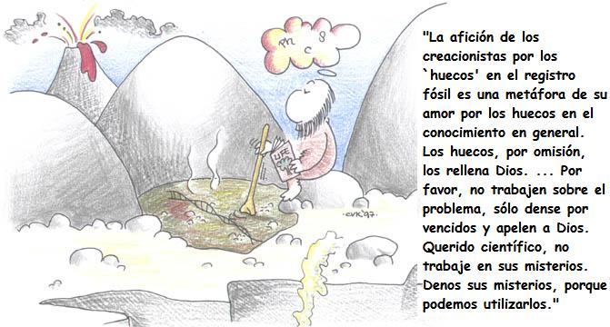

Resumen:
Mientras la derecha religiosa lucha contra la enseñanza de la evolución en Kansas, Richard Dawkins defiende la lógica científica.
La ciencia se alimenta del misterio. Mi colega Matt Ridley lo ha expresado así: “La mayoría de los científicos se aburren con lo que ya han descubierto. Es la ignorancia lo que les impulsa”. La ciencia explota la ignorancia. El misterio -lo que todavía no sabemos; lo que todavía no comprendemos- es la veta madre que buscan los científicos. Los místicos se regocijan con el misterio y quieren que permanezca misterioso. Los científicos se regocijan con el misterio por una razón muy distinta: les proporciona algo que hacer. Quizás no lo entendamos todavía, ¡pero estamos trabajando en ello! Cada misterio que se resuelve saca a la luz problemas sin resolver, y el científico lo aborda con entusiasmo.
El reconocimiento de la ignorancia y el desconcierto son vitales para la buena ciencia. Por tanto, es irritante, como mínimo, que los enemigos de la ciencia le den la vuelta a ese reconocimiento constructivo y abusen de ellos para sacar provecho político. Es peor que irritante. Amenaza a la propia empresa de la ciencia. Este es exactamente el efecto que está teniendo el creacionismo o la ‘teoría del diseño inteligente’ (ID), especialmente porque sus propagandistas son hábiles, superficialmente plausibles y, sobre todo, están muy bien financiados. El ID, por cierto, no es una nueva forma de creacionismo. Es simplemente creacionismo disfrazado, por razones políticas, bajo un nuevo nombre.

Ni siquiera es seguro para un científico expresar una duda temporal, como método retórico, antes de ponerse a disiparla.
“Suponer que el ojo, con todos sus inimitables artificios para ajustar el foco a distintas distancias, para admitir distintas cantidades de luz y para la corrección de la aberración esférica y cromática, pudo haberse formado por selección natural parece, lo confieso libremente, absurdo de todo punto.”
Verá citada una y otra vez esta frase de Charles Darwin por los creacionistas. Nunca citan lo que va a continuación. Darwin continuaba inmediatamente para vencer su incredulidad inicial. Otros han continuado con su fundación, y hoy el ojo es un ejemplo de la evolución gradual y acumulativa de una ilusión de diseño casi perfecta. El capítulo relevante de mi libro Escalando el monte improbable se llama “Los cuarenta caminos hacia la iluminación”, en honor al hecho de que, lejos de que sea difícil de evolucionar, el ojo ha evolucionado al menos cuarenta veces de manera independiente en el reino animal.

El distinguido genetista de Harvard Richard Lewontin es citado a menudo diciendo que los organismos “parecen haber sido diseñados cuidadosa e ingeniosamente”. De nuevo, esto era un preliminar retórico para explicar cómo la poderosa ilusión de diseño procede de la selección natural. La cita aislada elimina el énfasis implícito en “parecen”, dejando como resultado lo que una audiencia ingenuamente devota -en Kansas, por ejemplo- quiere oír.
La distorsión engañosa de las palabras de los científicos para ajustarse a la agenda anticientífica se encuentra entre los muchos hábitos anticristianos de los autores fundamentalistas. Pero Decir mentiras por Dios (título del libro del espléndidamente pugnaz geólogo australiano Ian Plimer) no es el problema más serio. Hay que hacer una observación más importante, y apunta directamente al corazón filosófico del creacionismo.
La metodología estándar de los creacionistas -de hecho, todos sus argumentos son variantes de ella- es encontrar algún fenómeno de la naturaleza para el que, en su opinión o incluso en realidad, el darwinismo no puede dar fácilmente una explicación. Darwin dijo:
“Si se pudiera demostrar que existe algún órgano complejo que no pudo formarse por un gran número de modificaciones pequeñas sucesivas, mi teoría se derrumbaría completamente.”
Los creacionistas explotan la ignorancia y la incertidumbre, no como acicate para la investigación honesta, sino para aprovecharse y abusar del reto de Darwin. “Apuesto a que no puede decirme cómo evolucionó en etapas graduales lentas el codo de la rana comadreja moteada”. Si el científico no es capaz de dar una respuesta inmediata y detallada, se saca una conclusión por defecto: “Por tanto, la teoría alternativa, el ‘diseño inteligente’, gana por omisión”. Téngase en cuenta, primero, la lógica parcial: si la teoría A falla en algo en particular, ¡la teoría B debe de ser correcta! Se nos induce a pasarnos a la conclusión por omisión sin siquiera averiguar si la teoría por omisión falla en el mismo particular. Se le concede al ID una protectora inmunidad (bastante equivocadamente, como ya he mostrado en otra parte) contra las preguntas rigurosas que surgen de la evolución.
Téngase en cuenta, en segundo lugar, cómo la estratagema creacionista socava el regocigo natural -de hecho, necesario- del científico ante la incertidumbre. Un científico actual estadounidense no se atreve a decir:
“Hum, interesante observación. Me pregunto cómo evolucionó el codo de los ancestros de la rana comadreja. No soy un especialista en ranas comadreja, tendré que ir a la biblioteca de la Universidad y echar un vistazo. Puede resultar un proyecto interesante para un estudiante de licenciatura.”
No. En el momento en el que un científico dijera algo así -y mucho antes de que el estudiante comenzara el proyecto-, la conclusión por omisión sería el titular de algún panfleto creacionista: “La rana comadreja sólo puede ser un diseño de Dios”.
Una vez comencé un capítulo sobre la famosa explosión cámbrica con las palabras: “Es como si los fósiles hubieran sido enterrados allí sin ninguna historia evolutiva”. De nuevo, esto era un comienzo retórico, dirigido a despertar el apetito del lector para la explicación que seguía. La triste retrospectiva me dice ahora qué predecible era que mi comentario fuera sacado alegremente de contexto. Los creacionistas adoran los ‘huecos’ en el registro fósil.
Hay muchas transiciones evolutivas documentadas elegantemente por una serie más o menos continua de fósiles intermedios en cambio gradual. Algunas no, y estas constituyen los famosos ‘huecos’. Michael Shermer ha señalado ingeniosamente que si el descubrimiento de un nuevo fósil divide un ‘hueco’ en dos partes, ¡el creacionista declarará que ahora hay dos huecos! Pero, en cualquier caso, téngase en cuenta de nuevo el uso injustificado del argumento por omisión. Si no hay fósiles para documentar una transición evolutiva postulada, la suposición por omisión es que no existe transición evolutiva: Dios debe haber intervenido.
Es completamente ilógico exigir una documentación completa de cada paso de cada narración, tanto en evolución como en cualquier otra ciencia. Sólo una pequeña parte de los animales muertos se fosilizan, y tenemos suerte de tener todos los fósiles intermedios que tenemos. Podríamos perfectamente no tener ningún fósil, y la evidencia de evolución de otras fuentes, como la genética molecular y la distribución geográfica, sería todavía abrumadoramente contundente. Por otro lado, la evolución produce la firme predicción de que si aparece un solo fósil en un estrato geológico equivocado, la teoría sería echada por tierra. Cuando un entusiasta popperiano le desafió a decir cómo podría falsarse la evolución, J. B. S. Haldane gruñó famosamente: “Conejos fosilizados en el precámbrico”. Nunca se han encontrado fósiles anacrónicos así, a pesar de las desacreditadas leyendas creacionistas sobre cráneos humanos en las vetas de carbón y huellas humanas entremezcladas con huellas de dinosaurio. La afición de los creacionistas por los ‘huecos’ en el registro fósil es una metáfora de su amor por los huecos en el conocimiento en general. Los huecos, por omisión, los rellena Dios. ¿No se sabe cómo funcionan los impulsos nerviosos? ¡Bien! ¿No se comprende cómo se guardan los recuerdos en el cerebro? ¡Excelente! ¿La fotosíntesis es un proceso misteriosamente complejo? ¡Maravilloso! Por favor, no trabajen sobre el problema, sólo dense por vencidos y apelen a Dios. Querido científico, no trabaje en sus misterios. Denos sus misterios, porque podemos utilizarlos. No desaproveche la ignorancia investigando para eliminarla. La ignorancia es el regalo de Dios a Kansas.

Richard Dawkins es biólogo evolutivo, nació en Nairobi, Kenya, en 1941 y se educó en la Universidad de Oxford. Comenzó su carrera como investigador en los 60, estudiando bajo la dirección del etólogo Nico Tinbergen, ganador del premio Nóbel, y desde entonces su trabajo ha girado en torno a la evolución del comportamiento. Ha obtenido las cátedras Gifford de la Universidad de Glasgow y Sidwich del Newham College de Cambridge. Además ha sido profesor de zoología de las universidades de Oxford y California, ha presentado programas de la BBC y dirigido varias publicaciones científicas. En 1995 se convirtió en el primer titular de la recién creada cátedra Charles Simony de Divulgación Científica en la Universidad de Oxford. Autor de obras muy leídas como:
El gen egoísta (1976; segunda edición, 1989; tercera, 2006)
El fenotipo extendido (1982)
El relojero ciego
El río del Edén (1995)
Escalando el monte improbable (1996)
Destejiendo el arco iris (1998) — Dawkins, con ironía pero también con rigor científico, se enfrenta a las pseudociencias mostrando lo que son: fraude, ilusión, alucinación, error o embuste.
El capellán del diablo (2003)
The Ancestor’s Tale: A Pilgrimage to the Dawn of Evolution (2004); El cuento del antepasado: un viaje a los albores de la evolución (2008)
The God Delusion (2006); El espejismo de Dios (2007)
The Greatest Show on Earth: The Evidence for Evolution (2009) (Evolución. El mayor espectáculo sobre la Tierra)
Volver a la sección Sociedad y religión
Comentarios
Comments powered by Disqus